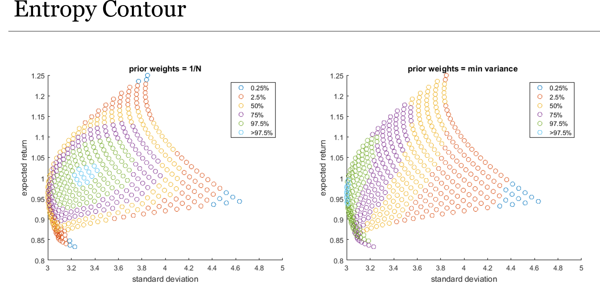
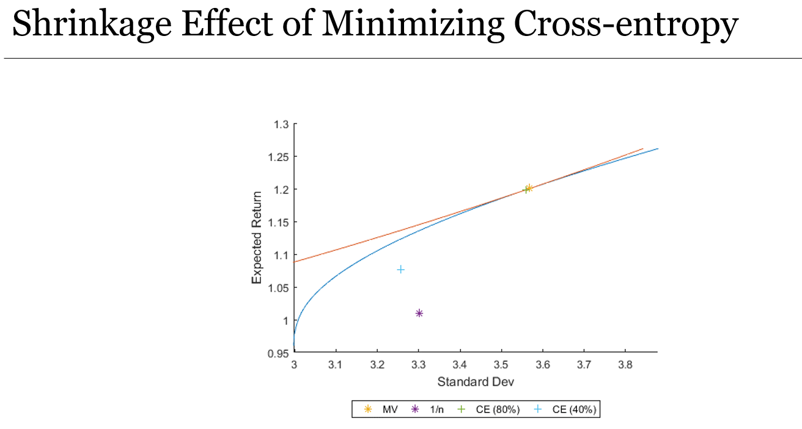

Portfolio Optimization Toolkit
Contributors
Zheng Duan (Department of Economics, American University)
Download
Download Here (avaliable file formats: MATLAB)
Description
A portfolio optimizatiob toolbox. Includes:
- Traditional Portfolio Optimization
- Mean-variance
- Re-sampling
- Bayes-Stein
- Generalized Cross-entropy based Portfolio Optimization
- Use equal weights as prior
- Use min variance weights as prior
- Visualization
- Contour curves of entropy
- Shrinkage effect
- Performance Comparison
- Sharpe Ratio
|  |
Entropy contours for different levels of risk and return |
| 
| shrinkage effects of minimizing cross-entropy |